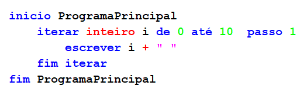
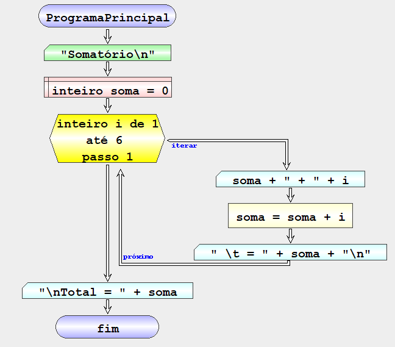
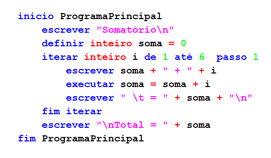

Iteração de um conjunto de valores
Permite iterar um conjunto de valores dentro do intervalo [ex1 , ex2[ onde os valores estão separados por ex3. O limite inicial de iterador está incluído e o limite final não. A instrução permite definir uma variável de iteração ou utilizar uma variável numérica já existente.
(Tipo) - tipo de variável numérica ( INTEGER | REAL) - Opcional.
(var) - nome da variável de iteração.
(ex1) - expressão computacional para determinar o valor inicial.
(ex2) - expressão computacional para determinar o valor final.
(ex3) - expressão computacional para determinar a separação entre os valores do intervalo.
Exemplo 1 - contar por ordem crescente
Algoritmo que imprime na consola os números inteiros entre 0 e 10 por ordem crescente
| Fluxograma | pseudocodigo |
|---|---|
 |
 |
Result:

NOTA: Não existe nenhuma variável definida no final do ciclo porque o iterador i é interno ao ciclo.
Example 2 - Sum of the first 5 pairs
Algorithm that makes the sum of the first 5 pairs and prints the result
| Fluxogram | pseudocode |
|---|---|
|  |  |